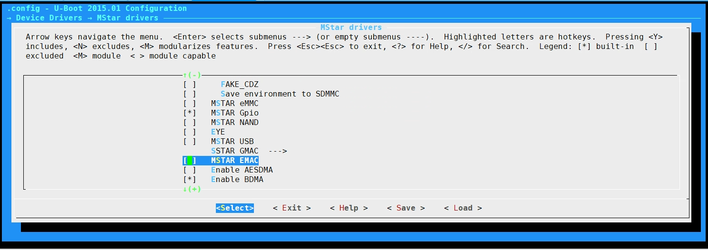
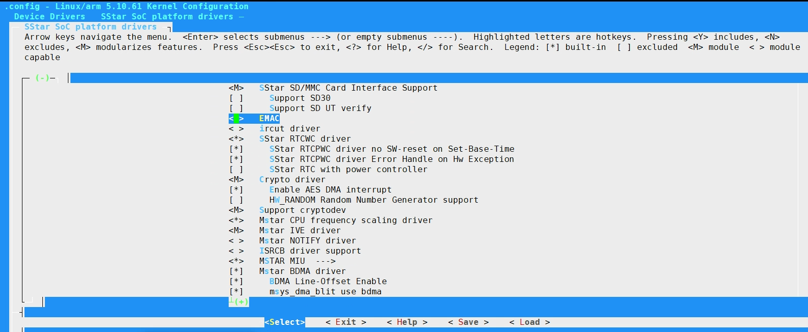
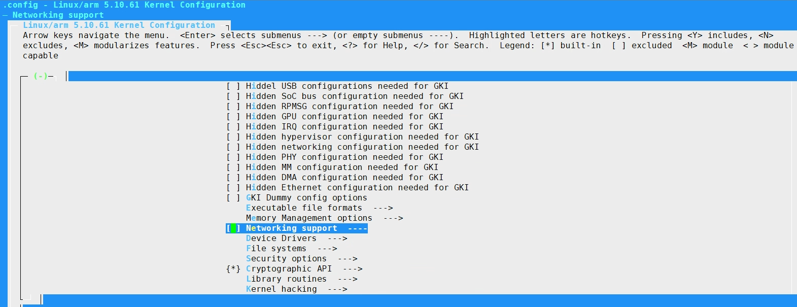
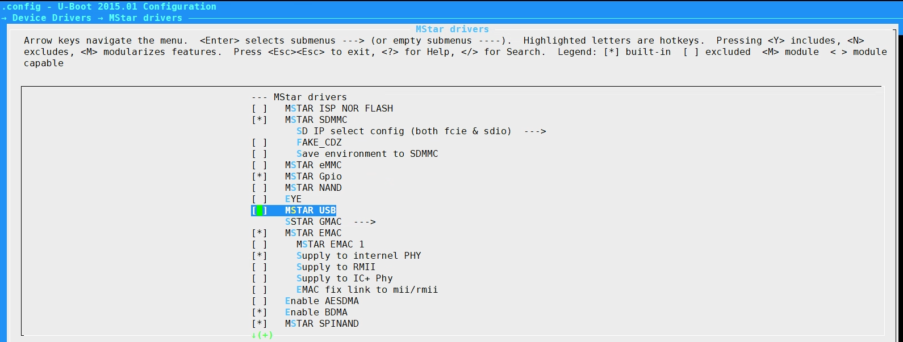
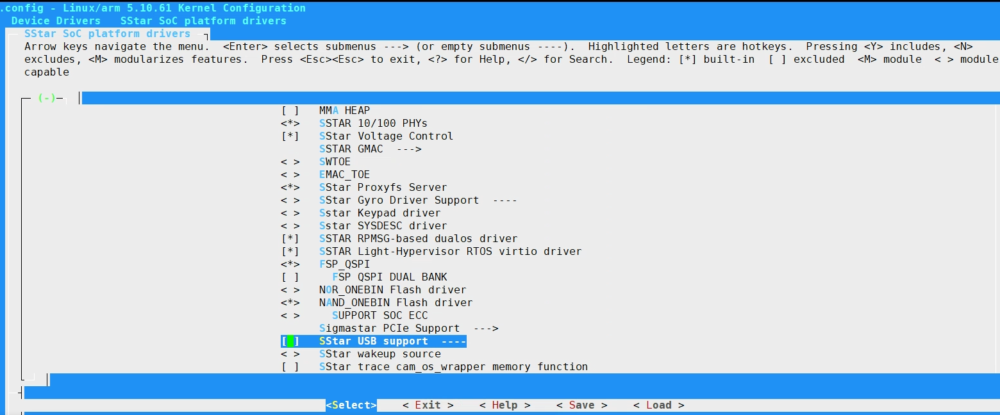

功耗调整指引
1. 打开/关闭 组件¶
1.1. 可选的组件¶
在 Maruko 上可选使能的组件有: ETH、USB
1.2. ETH¶
需要在U-Boot及Linux Kernel进行调整才能完全关闭该组件。
1.2.1. 调整U-Boot
Step1. 取消MSTAR EMAC的选项

1.2.2. 调整Linux Kernel
Step1. 取消EMAC的选项

Step2. 取消Networking support的选项

1.3. USB¶
需要在U-Boot及Linux Kernel进行调整才能完全关闭该组件。
1.3.1. 调整U-Boot
Step1. 取消MSTAR USB的选项

1.3.2. 调整Linux Kernel
Step1. 取消USB选项

2. 组件时钟频率配置¶
2.1. CPU 时钟频率配置¶
2.1.1. Voltage scaling 配置
Core Power :
cat /sys/devices/system/voltage/core_power/voltage_current
注：VID driver尚未Merge。
Clock scaling 配置:
-
Read current CPU frequency
cat /sys/devices/system/cpu/cpufreq/cpufreq_testout
-
Update CPU frequency
echo x > /sys/devices/system/cpu/cpu0/cpufreq/scaling_min_freq echo x > /sys/devices/system/cpu/cpu0/cpufreq/scaling_max_freq x = 600000, 800000, 1000000, 1200000
举例：
echo 1000000 > /sys/devices/system/cpu/cpu0/cpufreq/scaling_min_freq echo 1000000 > /sys/devices/system/cpu/cpu0/cpufreq/scaling_max_freq
默认min cpufreq = 600 MHz：
# cat /sys/devices/system/cpu/cpufreq/cpufreq_testout 600016000
如修改min cpufreq为1000MHz：
# cat /sys/devices/system/cpu/cpu0/cpufreq/scaling_min_freq 1000000 # cat /sys/devices/system/cpu/cpu0/cpufreq/scaling_max_freq 1200000 # cat /sys/devices/system/cpu/cpufreq/cpufreq_testout 1000032000
2.2. ISP 时钟频率配置¶
2.2.1. ISP配置示例
在isp.ko、ispmid.ko加载之后，开启视频处理任务之前，即可通过如下命令设置相关频率:
读取目前的isp clock rate，可通过以下命令取得：
cat /sys/devices/virtual/mstar/isp0/isp_clk
设置isp clock rate，可通过以下命令设置：
echo 320000000 > /sys/class/mstar/isp0/isp_clk
2.2.2. ISP时钟频率档位
-
320000000 (320Mhz)
-
288000000 (288Mhz)
-
216000000 (216Mhz)
-
192000000 (192Mhz)
-
172000000 (172Mhz)
-
123000000 (123Mhz)
-
72000000 (72Mhz)
2.2.3. 约束
以上的设置应该在模块加载完成之后操作模块功能之前设置，才能正确的生效。
2.3. VCODEC时钟频率配置¶
2.3.1. VCODEC配置示例
在开启视频编解码处理任务之前，即可通过如下命令设置相关频率:
Maruko Vcodec Firmware跑在一颗独立的Cpu(Vcpu)，且HW ip与ven arbiter clk分别单独控制，因此有三个Clk: Vcpu(SW)、HW ip、ven arbiter(AXI)，分别透过ven_clock、ven_clock_2nd、ven_clock_axi控制。
读取目前的clock rate，可通过以下命令取得：
cat /sys/devices/virtual/mstar/venc/ven_clock cat /sys/devices/virtual/mstar/venc/ven_clock_2nd cat /sys/devices/virtual/mstar/venc/ven_clock_axi cat /sys/devices/virtual/mstar/venc/ven_clock_scdn
设置clock rate，可通过以下命令设置：
echo 320000000 > /sys/devices/virtual/mstar/venc/ven_clock echo 320000000 > /sys/devices/virtual/mstar/venc/ven_clock_2nd echo 320000000 > /sys/devices/virtual/mstar/venc/ven_clock_axi echo 320000000 > /sys/devices/virtual/mstar/venc/ven_clock_scdn
2.3.2. 编解码器时钟频率档位
-
ven_clock
-------VENC Device [0]--------- 384000000 <-- 192000000 240000000 216000000 320000000 288000000
-
ven_clock_2nd
-------VENC Device [0]--------- 192000000 240000000 216000000 320000000 <-- 288000000
-
ven_clock_axi
-------VENC Device [0]--------- 192000000 240000000 216000000 320000000 <-- 288000000
2.3.3. 约束
-
Clock 只允许在 加载.ko之后、跑应用之前 修改。
-
建议ven_clock_2nd/ ven_clock_axi修改保持一致，ven_clock >= ven_clock_2nd
2.4. SCL 时钟频率配置¶
2.4.1. scaler时钟频率配置
在开启视频处理任务之前，即可通过如下命令设置相关频率:
-
读取目前的clock rate，可通过以下命令取得
cat /sys/devices/virtual/mstar/mscl/clk
-
设置clock rate，可通过以下命令设置
echo 320000000 > /sys/devices/virtual/mstar/mscl/clk
2.4.2. scaler时钟频率档位
-
320000000 <-------
-
216000000
-
192000000
-
384000000 (OD)
-
288000000
-
172000000
-
123400000
2.4.3. 约束
以上的设置应该在模块加载完成之后操作模块功能之前设置，并在执行模块时才能正确的生效。
2.5. JPEG 时钟频率配置¶
2.5.1. JPEG时钟频率配置
在开启视频处理任务之前，即可通过如下命令设置相关频率:
-
读取目前的clock rate，可通过以下命令取得：
cat /sys/class/mstar/jpe/jpe_clock
-
设置clock rate，可通过以下命令设置：
echo 320000000 > /sys/class/mstar/jpe/jpe_clock
2.5.2. JPEG时钟频率档位
-------Device 0--------- 288000000 123400000 384000000 <-- 320000000 172000000 216000000
2.6. IVE 时钟频率配置¶
2.6.1. IVE时钟频率配置
在开启视频处理任务之前，即可通过如下命令设置相关频率:
-
读取目前的clock rate，可通过以下命令取得(Bank 1038 h6a [12:8] reg_ckg_ive)
/customer/riu_r 1038 6a
-
设置clock rate，可通过以下命令设置
/customer/riu_w 1038 6a XXYY XX : IVE clock YY : origin value (use riu_r to check this value)
2.6.2. IVE时钟频率档位
-
XX=00001 : disable clock
-
XX=00000 : 432 MHz
-
XX=00100 : 172 MHz
-
XX=01000 : 480 MHz
-
XX=01100 : 123 MHz
-
XX=10000 : 288 MHz
-
XX=10100 : 320 MHz
-
XX=11000 : 384 MHz
-
XX=11100 : 240 MHz
2.7. IPU 时钟频率配置¶
2.7.1. IPU时钟频率配置
通过写时钟频率（单位MHz）到/sys/dla/clk_rate配置IPU时钟频率。
举例：echo 900 > /sys/dla/clk_rate
2.7.2. IPU时钟频率档位
# cat /sys/dla/freq current ipu clock frequency: 800MHz available frequency: 900MHz 800MHz 700MHz 600MHz 500MHz 400MHz 300MHz
2.8. 观察cpu的温度¶
cat /sys/devices/virtual/mstar/msys/TEMP_R
结果仅供参考，因为误差可以达到5摄氏度。